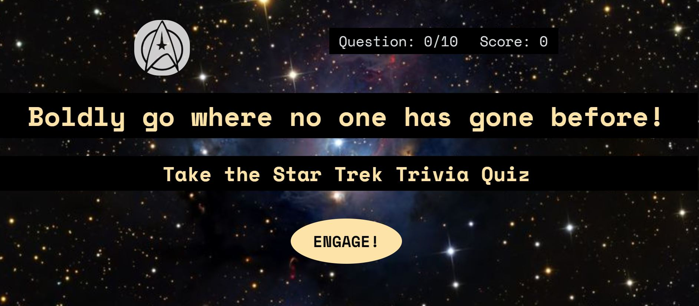

Hi. I'm Yulia.
I’m an aspiring full-stack developer and web accessibility specialist.
I am ...
a curious web development student at Thinkful. I love to find simple and efficient solutions to complex problems, both in tech and in life. I strive to make all my projects accessible to a wide variety of users and am constantly learning the best ways to do that. I’m also an artist and co-direct an experimental dance theatre company in Portland, OR. As I grow, learn, and change in my coding journey, so will this bio and portfolio. I’m excited to learn more technologies and combine all my different passions and values: art, social justice, accessibility, and technology.
Projects
Star Trek Quiz
Contact
I'd love to hear from you!
Email: yulia.arakelyan@gmail.com
Find me on GitHub